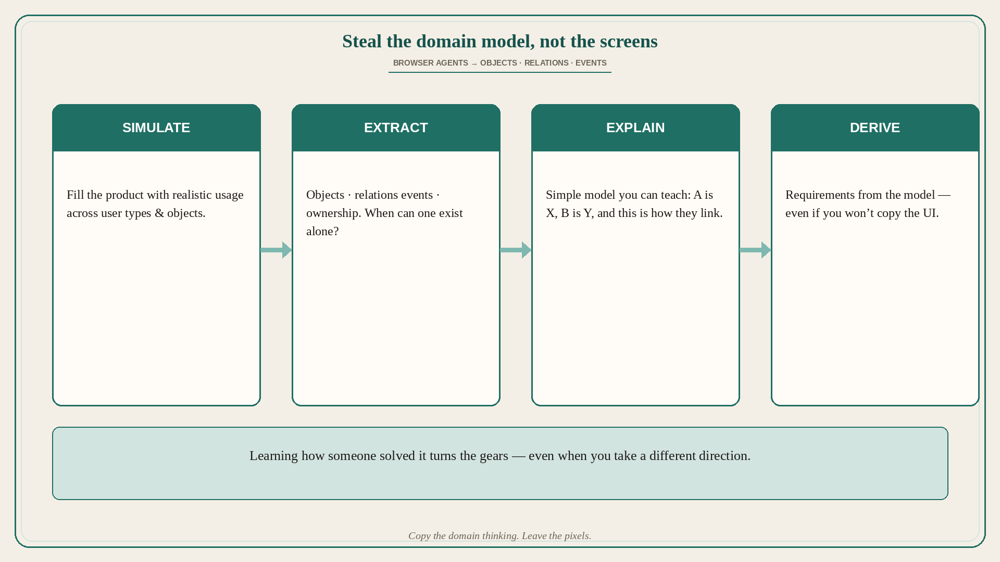

Steal the domain model, not the screens
Source: George / prodmgmt.world (@nurijanian)
original post
What it claims
One of the best browser-agent use cases: extract design/product decisions from existing products. Simulate realistic usage, recover the domain model (objects, relations, events), then derive requirements. You may not copy the direction — learning how someone solved it still turns the gears.
Why it matters for a PO
POs under discovery pressure often screenshot competitors and debate UI. The durable asset is the domain model: what the objects are, how they relate, when one can exist without the other, what events create or complete them. Browser agents can accelerate that recovery so you bring a teachable model into refinement — requirements from structure, not from borrowed pixels.
3 takeaways
- Simulate usage → extract objects/relations/events → explain simply → derive requirements.
- Screenshots without a domain model are decoration; models transfer.
- You can reject their product direction and still learn from how they modeled the problem.
Practice this week
Pick one adjacent product in a live problem area. Use a browser agent (or a structured walkthrough) to simulate usage across two user types and two core objects. Write a half-page: “Object A is…, Object B is…, they relate when…, events that create/change/complete them are….” Derive three “As a… I want… so that…” requirements from that model — then decide which (if any) you will pursue without copying their UI.